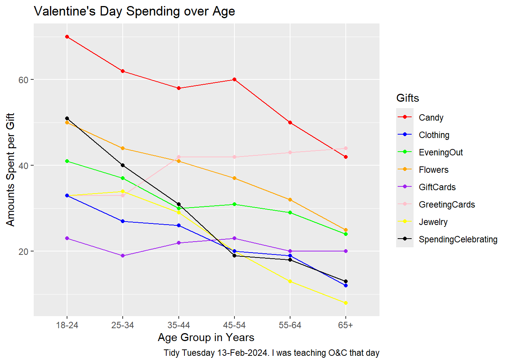

This analysis explores how much people spend on gifts at different ages, focusing on items like Candy, Clothing, and Flowers. It aims to show trends in spending habits and preferences among age groups.
Installing Packages
library(tidyverse)
── Attaching core tidyverse packages ──────────────────────── tidyverse 2.0.0 ──
✔ dplyr 1.1.4 ✔ readr 2.1.5
✔ forcats 1.0.0 ✔ stringr 1.5.1
✔ ggplot2 3.5.1 ✔ tibble 3.2.1
✔ lubridate 1.9.3 ✔ tidyr 1.3.1
✔ purrr 1.0.2
── Conflicts ────────────────────────────────────────── tidyverse_conflicts() ──
✖ dplyr::filter() masks stats::filter()
✖ dplyr::lag() masks stats::lag()
ℹ Use the conflicted package (<http://conflicted.r-lib.org/>) to force all conflicts to become errors
library(mosaic)
Registered S3 method overwritten by 'mosaic':
method from
fortify.SpatialPolygonsDataFrame ggplot2
The 'mosaic' package masks several functions from core packages in order to add
additional features. The original behavior of these functions should not be affected by this.
Attaching package: 'mosaic'
The following object is masked from 'package:Matrix':
mean
The following objects are masked from 'package:dplyr':
count, do, tally
The following object is masked from 'package:purrr':
cross
The following object is masked from 'package:ggplot2':
stat
The following objects are masked from 'package:stats':
binom.test, cor, cor.test, cov, fivenum, IQR, median, prop.test,
quantile, sd, t.test, var
The following objects are masked from 'package:base':
max, mean, min, prod, range, sample, sum
library(skimr)
Attaching package: 'skimr'
The following object is masked from 'package:mosaic':
n_missing
Rows: 6 Columns: 9
── Column specification ────────────────────────────────────────────────────────
Delimiter: ","
chr (1): Age
dbl (8): SpendingCelebrating, Candy, Flowers, Jewelry, GreetingCards, Evenin...
ℹ Use `spec()` to retrieve the full column specification for this data.
ℹ Specify the column types or set `show_col_types = FALSE` to quiet this message.
SpendingCelebrating <dbl>: This variable indicates the amount spent on celebrating occasions, useful for understanding spending behavior.
Candy <dbl>: This variable represents the amount spent on candy, relevant for analyzing preferences in confectionery spending.
Flowers <dbl>: This variable indicates the amount spent on flowers, significant for assessing spending in the floral category.
Jewelry <dbl>: This variable represents the amount spent on jewelry, important for understanding luxury spending habits.
GreetingCards <dbl>: This variable indicates the amount spent on greeting cards, useful for analyzing spending in personal communications.
EveningOut <dbl>: This variable represents the amount spent on evening outings, significant for evaluating entertainment expenses.
Clothing <dbl>: This variable indicates the amount spent on clothing, relevant for understanding fashion and apparel spending.
GiftCards <dbl>: This variable represents the amount spent on gift cards, important for analyzing gift-giving behaviors.
Qualitative Variables
Age <chr>: This variable categorizes individuals into age groups (e.g., 18-24, 25-34, etc.), useful for demographic analysis.
Analyzing the qualitative data
Age
gifts_age%>%count(Age)
# A tibble: 6 × 2
Age n
<chr> <int>
1 18-24 1
2 25-34 1
3 35-44 1
4 45-54 1
5 55-64 1
6 65+ 1
Observations
Each age group is evenly distributed with 1 observation each. This equal distribution provides a balanced foundation for analyzing patterns or trends across various age groups.
Analyzing the quantitative data
SpendingCelebrating
gf_histogram(~SpendingCelebrating, data = gifts_age)
Candy
gf_histogram(~Candy, data = gifts_age)
Flowers
gf_histogram(~Flowers, data = gifts_age)
Jewelry
gf_histogram(~Jewelry, data = gifts_age)
Greeting Cards
gf_histogram(~GreetingCards, data = gifts_age)
Evening Out
gf_histogram(~EveningOut, data = gifts_age)
Clothing
gf_histogram(~Clothing, data = gifts_age)
Gift Cards
gf_histogram(~GiftCards, data = gifts_age)
Observations
The histograms for the eight spending categories—SpendingCelebrating, Candy, Flowers, Jewelry, GreetingCards, EveningOut, Clothing, and GiftCards—show different patterns in how much people spend across various age groups. Most categories reveal that individuals tend to spend similar amounts, especially around mid-range values. For instance, SpendingCelebrating and GiftCards generally show lower spending, while Candy and Jewelry have more even spending across different amounts. The EveningOut category has a noticeable peak around 30, indicating that many people spend around this amount. Similarly, Clothing shows more spending between 20 and 25, while GreetingCards tends to cluster around higher amounts, particularly 42 and 43. Flowers demonstrate a consistent spending pattern without big gaps. Overall, while spending habits differ by category, there is a common trend where most people prefer to spend similar mid-range amounts, reflecting shared habits in gift-giving and leisure activities.
Transforming the data
Notes:
data.frame: It is a specific type of data structure that organizes data into rows and columns, allowing for efficient storage and manipulation of datasets in a tabular format. In contrast, names like gifts_age or gifts_extra are user-defined variable names that represent specific instances of data frames, helping to describe the content they hold and making the code easier to understand.
pivot_longer: It reshapes data from a wide format to a long format. This means it takes multiple columns and combines them into key-value pairs, creating a more compact data structure. It helps make data analysis and visualization easier by organizing related data points into a single column, which is useful for comparing and plotting.
The target variable is what you’re trying to predict or understand in an analysis. In this case, AmountsSpent is the focus. When examining spending on items like Candy, Clothing, and Flowers across different age groups reveals how spending habits change with age, making AmountsSpent the key outcome of interest in the analysis.
Predictor Variables
Predictor variables are the independent variables that are used to explain or predict the outcome in an analysis. The predictor variables for this dataset are as follows:
Age: It categorizes people by their years of life, helping to analyze how spending habits vary across different life stages.
Gifts: These are categories of products or services, like Candy or Clothing. Analyzing spending on these items can help reveal consumer preferences across age groups.
Research Question
How does gift spending vary across different age groups?
Is there a significant difference in spending between items such as Candy, Clothing, and Flowers across age groups?
Plot
gf_line(AmountsSpent ~ Age, data = gifts, group =~ Gifts, color =~ Gifts) %>%gf_point() %>%gf_labs(title ="Valentine's Day Spending over Age",x ="Age Group in Years",y ="Amounts Spent per Gift",caption ="Tidy Tuesday 13-Feb-2024. I was teaching O&C that day" ) %>%gf_refine(scale_color_manual(values =c("Candy"="red", "Clothing"="blue", "EveningOut"="green", "Flowers"="orange", "GiftCards"="purple", "GreetingCards"="pink", "Jewelry"="yellow", "SpendingCelebrating"="black")))

Plot with shapes
gf_line(AmountsSpent ~ Age, data = gifts, group =~ Gifts, color =~ Gifts) %>%gf_point(shape =~ Gifts, size =3) %>%# Use shape directlygf_labs(title ="Valentine's Day Spending over Age",x ="Age Group in Years",y ="Amounts Spent per Gift",caption ="Tidy Tuesday 13-Feb-2024. I was teaching O&C that day" ) %>%gf_refine(scale_color_manual(values =c("Candy"="red", "Clothing"="blue", "EveningOut"="green", "Flowers"="orange", "GiftCards"="purple", "GreetingCards"="pink", "Jewelry"="yellow", "SpendingCelebrating"="black"))) %>%gf_refine(scale_shape_manual(values =c("Candy"=16, "Clothing"=1, "EveningOut"=17, "Flowers"=4, "GiftCards"=18, "GreetingCards"=25, "Jewelry"=8, "SpendingCelebrating"=3)))
Plot Analysis
Type of Chart.
The chart is a line plot with points(shapes), where the different points represent different items like candy, clothing, etc.
Variables Used for Various Geometrical Aspects.
X-axis Variables: Represents the age groups such as 18-24, 25-34, 35-44, 45-54, 55-64 and 65+
Y-axis Variables: Represents the amount spent on each category
Colour: Each item is represented by a different color to distinguish spending patterns.
Shape: Different shapes for data points represent different gifts
What activity might have been carried out to obtain the data graphed here?
A research survey was likely conducted, asking respondents from different age groups about their spending habits on Valentine’s Day gifts. Participants probably reported how much they spent on items like candy, clothing, flowers, and gift cards.
What pre-processing of the data was required to create the chart?
Pivoting: The dataset is reshaped from wide to long format using the pivot_longer function. This transformation consolidates the amounts spent on each gift category into a single column, AmountsSpent, while retaining Age as an identifier variable. Each row in the new dataset now corresponds to the spending on a specific gift category for a particular age group.
Factor Conversion: After pivoting, the code uses the mutate function under the dplyr package to convert the Age and Gifts columns into factors. This conversion is essential for better handling of categorical variables in visualizations, ensuring that the plotting functions recognize these variables as categorical rather than continuous.
Hypothesis/Research Question.
How does gift spending vary across different age groups?
Two-Line Story Based on the Graph.
Spending on candy and celebrations decreases steadily with age, while spending on greeting cards and gift cards remains relatively stable across age groups. The data suggests that older individuals prefer more practical gifts like gift cards, while younger people spend more on traditional gifts like candy and flowers. This reveals that younger age groups tend to spend more on gifts for Valentine’s Day, particularly on candy and flowers, indicating that romantic gestures are more prominent among younger individuals and highlighting differing approaches to celebration across age brackets.
Inferences and My Journey
I initially began working on a case study titled “Women Live Longer.” I made significant progress on it and almost done with then case study when I ran into issues with replicating the graph. I tried multiple different versions, but none of them worked as expected. The closest attempt was using the following code:
##ggplot(life_expectancy_data, aes(x = LifeExpMale, y = LifeExpFemale, size = Population))+ ##geom_point(shape = 21, color = "black", fill = NA) + ##geom_abline(intercept = 0, slope = 1, linetype = "dashed") + ##labs(title = "Life Expectancy across Countries and Years", ##x = "For Men (Years)", ##y = "For Women (Years)") + ##scale_size_continuous(breaks = c(5e8, 1e9), ##labels = c("5.0e+08", "1.0e+09"), ##guide = guide_legend(override.aes = list(fill = NA, color = "black"))) + ##xlim(50, 90) + ##ylim(50, 90)
However, the resulting plot had issues. The circles representing data points were inaccurately placed, and despite my efforts, I couldn’t figure out how to correct it. Additionally, I wanted to attach the index file along with the rest of my A2, but the file was bugged, preventing me from rendering and pushing it to Git.
After spending many hours without success, I decided to switch to the “Valentine’s Day Spending” case study. This one was much easier to understand and implement. I had no problems transforming the data and replicating the graphs. Identifying the quantitative and qualitative variables, along with the target and predictor variables, was also pretty easy.
However, I did encounter a challenge while analyzing the graphs for quantitative variables. Most of them showed very little variation, which made them look different from typical histograms. This lack of diversity made it hard to draw meaningful observations from those graphs.
I also felt confused about whether to use the transformed dataset or the original dataset when deciding on the quantitative and qualitative variables, as well as identifying the target and predictor variables. In the end, I decided to use the original dataset for identifying the quantitative and qualitative variables, and then I transformed it to determine the target and predictor variables.
When transforming the data, using the pivot_longer() function was helpful. It reshaped the data into a long format, bringing together the amounts spent on each gift category into a single column. This change made it easier to visualize and compare spending across categories. By converting the Age and Gifts columns into factors, the analysis ensured they were treated correctly as categorical variables, which helped clarify the results.
The visualizations I created using gf_line() and gf_point() effectively illustrated spending trends across different age groups. These functions allowed me to create clear line plots that displayed the data in an organized way. By using different colors and shapes for each gift category, I was able to make the information more visually appealing and easier to interpret.
Learning how to implement shapes in the code was quite simple. had to look up which numbers corresponded to each shape and apply them in my plots. This added another layer of clarity, as it helped distinguish between the various spending categories. However, I’m still figuring out how to create the shape for spendingcelebrating, which looks like a circle with a ‘+’ sign inside. My final guess is that maybe having a code where one shape is added to another might achieve the final shape. Despite this small challenge, using different shapes in my visualizations significantly improved my ability to see and compare spending patterns across age groups. It helped me understand how different age groups prioritize their spending on gifts.
One important observation from the analysis is the difference in gift preferences among various age groups. Younger people, especially those aged 18-34, tend to spend more on traditional romantic gifts like candy and flowers, showing a clear preference for symbolic gifts. In contrast, older individuals (ages 55 and up) are less interested in extravagant items like jewelry and evening outings, but they consistently spend on practical gifts, highlighting a focus on usefulness and sentimental value. Distinct spending patterns also appeared across different gift categories; for example, spending on clothing and jewelry decreases with age, while greeting cards remain popular across all groups. Interestingly, spending on evening outings peaks among those in their mid-30s to mid-40s, suggesting this age group values experiences more than their younger or older counterparts. Overall, these trends provide valuable insights into how consumer behavior changes at different life stages.